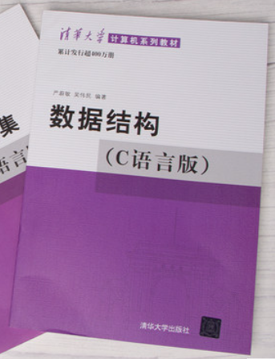
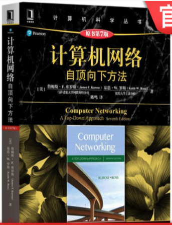
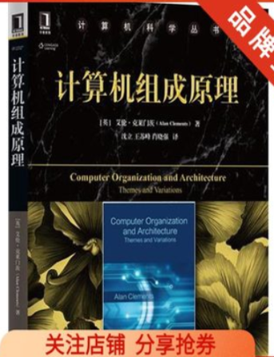
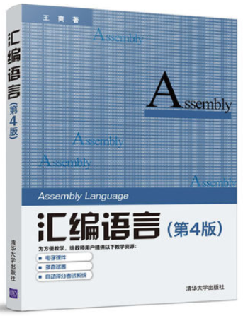
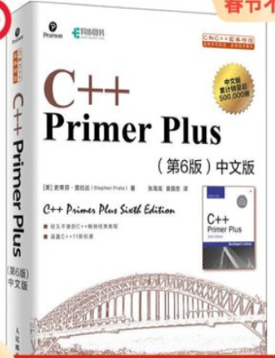

.png)
数据结构与算法  |
算法设计与问题求解 |
计算机网络  |
计算机组成原理  |
汇编语言  |
C++ prime plus  |
大二上复习资料
提取码为6gv5点击这里获得资料
说到计算机专业就不得不了解计算机的发展历史，计算机是20世纪的伟大发明之一，它的发明可以说具有划时代的意义。计算机使当代社会的经济、政治、军事、科研、教育、服务等方面在概念和技术上发生了革命性的变化，对人类社会的进步已经并还将产生极为深刻的影响。目前，计算机是世界各发达国家激烈竞争的科学技术领域之一。随着信息时代的到来，计算机逐渐成为技术及科学领域的核心。随着计算机的普及，其应用领域逐渐广泛，深刻影响着我们的学习，工作及生活。因而，计算机的学习与我们的生活息息相关。
来到大学，我首先选择的就是计算机专业。在这个专业，我彻彻底底的喜欢上了计算机。喜欢计算机不仅仅是因为它可以去和别人沟通、玩游戏等来消磨时间。更多是因为计算机的强大功能。 计算机是一种能够按照事先存储的程序，自动、高速地对数据进行输入、处理、输出和存储的现代化智能电子设备。一个计算机系统包括硬件和软件两大部分，两者密不可分，缺一不可。而想要更深入的了解计算机就需要我们走向计算机专业的道路。计算机专业大致分为三大类:计算机基础专业、与理工科交叉的计算机专业、与文科艺术类交叉的计算机专业。计算机专业的学生在学习计算机专业的一些课程之后获得了来自学校授予我们的学士学位证之后，可以相当于计算机等三级或者四级的水准。
下面是计算机专业的学生在大学期间应该学习的基础课程。
除了基础课程还有面向对象技术、计算机网络、数字图像处理、人机交互、信息安全等方面的知识。
我们要从网络、数据库、信息安全等方面了解一下网络:顾名思义就是计算机网络，关于计算机网络的最简单定义是:一些相互连接的、以共享资源为目的的、自治的计算机的集合。另外，从逻辑功能上看，计算机网络是以传输信息为基础目的，用通信线路将多个计算机连接起来的计算机系统的集合，一个计算机网络组成包括传输介质和通信设备。从用户角度看，计算机网络它是这样定义的:存在着一个能为用户自动管理的网络操作系统。有它调用完成用户所调用的资源，而整个网络像一个大的计算机系统一样，对用户是透明的。从整体上来说计算机网络就是把分布在不同地理区域的计算机与专门的外部设备用通信线路互联成一个规模大、功能强的系统，从而使众多的计算机可以方便地互相传递信息，共享硬件、软件、数据信息等资源。简单来说，计算机网络就是由通信线路互相连接的许多自主工作的计算机构成的集合体。数据库:数据库是依照某种数据模型组织起来并存放二级存储器中的数据集合。数据可以共享、数据独立性高、数据冗余大，易移植、统一管理和控制等特点。没有数据库我们的程序也就只是一个空壳子而已。
作为计算机专业的学生，应该系统地学习计算机专业的各种理论课程，具有深厚的理论素质和创新能力，有独立自主的学习态度和能力，有较强的实践和操作能力。此外，我个人认为一个计算机专业的学生还要具备良好的心理素质，敢为人先，善于抓住机遇获得知识和寻求突破，永远都不觉得满足，孜孜不倦地吸取对自己有用的知识，努力展现自己的实力，为社会贡献自己的力量。
我现在是一名大二计算机科学与技术的学生，由于西交的大类招生，导致我的课程进度相比其他学校要慢，我觉得我应该 认真自学一些课程内容，比如选修中选不到的组合数学，汇编语言，优化方法基础等等，或者在网站上自己刷一些算法题，甚至自己学习机器学习等等，而把金工实习、电工实习、模拟集成电路这样的课程优先级放低，尽可能地加强自己的专业能力，尽量精通一门语言，大三开始参加一下编程比赛，尽量拿奖，为以后考研或者找工作做好准备。同时也要抓住去大企业实习的机会，努力提升自己的实践能力！